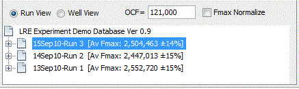
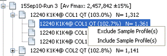
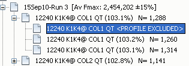
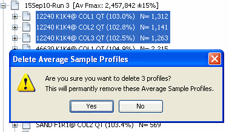

The Experiment Database Window displays data elements stored within an experiment database file, which consists of a series of associated runs. When an experiment database is first opened, all of the runs within the database will be presented as a tree:

The root presents the name of the database file. Each Run within the database file is then listed as branches, with the date, name and average Fmax ±CV of the run presented in the branch label. Profiles within a Run can be view by expanding a Run branch by either double clicking on the branch or clicking on the on the left of the branch:
This presents each average profile as a branch below the respective Run. Each profile label provide information about the LRE analysis [Amplicon@Sample (Emax) N= # of Target Molecules]
An average profile branch can be expanded to show the replicate profiles:
Note that the LRE analysis of the average profile is independent of that conducted on the replicate profiles. However, right clicking on a replicate profile will present a fly out menu that allows the profile to be excluded:

"EXCLUDED" is added to the label to signify that this replicate profile is not included into the average profile:

This will then trigger recalculation of the average profile using the remaining replicate profiles, and an automated LRE analysis conducted on the new average profile. An excluded replicate profile can also be included, and again the average profile is updated to include the replicate profile.
Similarly, average profiles and runs can be deleted by right clicking and selecting "Delete...". Note also that multiple average profiles or runs can be deleted simultaneously deleted by multiple selection using the Shift or Ctrl key in combination with the mouse left click:

IMPORTANT: Note that there is no undo function in this version of the LRE Analyzer, so once a run or profile is deleted, there is no way to recovery it.
Above the Run tree, a calibration factor (OCF) can be manually entered, along with checkboxes that implement fixing Emax to 100% and Fmax Normalization:
The optical calibration overview provides details about how an OCF is derived and how it is used to convert target quantities into the number of molecules. The function of the Run View button is described in the Sort View Panel.